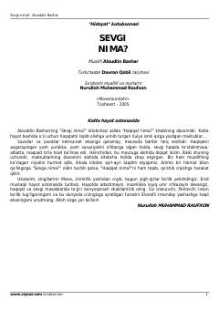

SNYoshlarga sevgi va haqiqat haqida islomiy ruhda yozilgan maktublar to'plami.
Bu kitob turk muallifi Alouddin Basharning 'Haqiqat nima?' asarining davomi bo'lib, Xulyo ismli qizga yozilgan maktublar shaklida sevgi, haqiqat va insoniy qadriyatlar haqida mulohaza yuritadi. Kitob yoshlarni to'g'ri dunyoqarash shakllantirish, sevgi va hayot ma'nosini islomiy nuqtai nazardan anglashga undaydi. Turkchadan Davron Qobil tomonidan tarjima qilingan va 2005-yilda Toshkentda nashr etilgan.